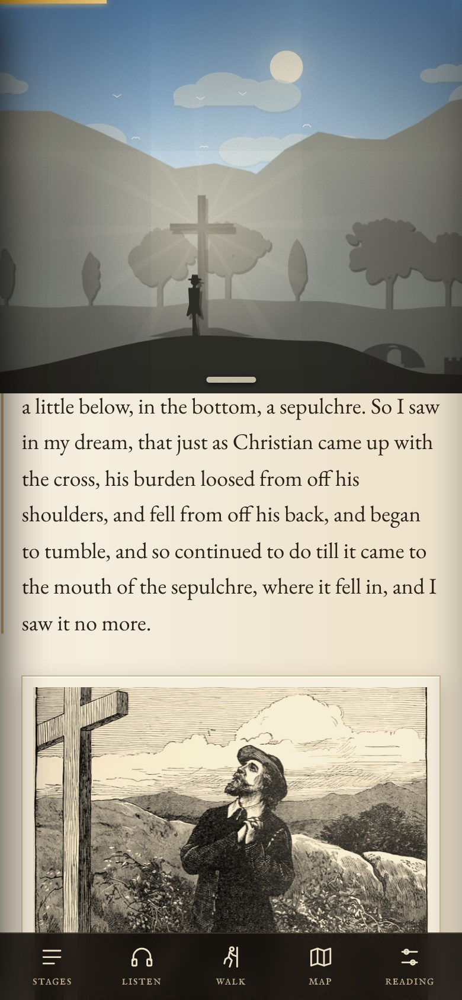

I
The burden falls at the Cross
Christian carries his burden until the text reaches the Cross. Then it loosens, tumbles down the slope and falls into the sepulchre. His rags become a coat, he is given his roll, he is armed at the Palace Beautiful.
Frederick Barnard’s engravings of 1890 sit beside the passages they show, and open full size.
